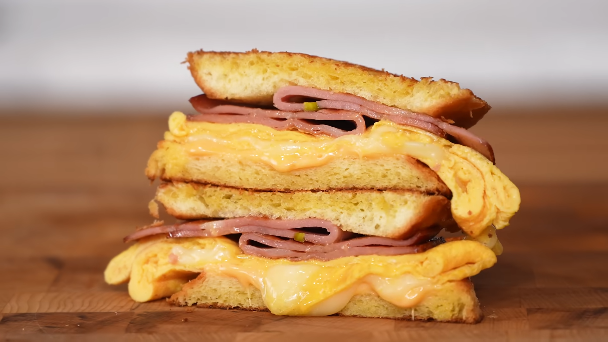

B Fast Sando

The B Fast Sando is described as a breakfast sandwich that combines elements of Anthony Bourdain's favorite Mortadella sandwich, a breakfast sandwich, and the grilled cheeseburger from Five Guys. It features crispy yet succulent fried Mortadella, eggs, and cheese on soft grilled bread, offering a new experience for a breakfast sandwich. A recipe by Joshua Weissman
Meals So Easy A College Student Could Make It
Ingredients
- Burger buns: Store-bought works, or homemade
- Cooking oil: Of your choice, literally anything on hand
- Mortadella: About two large slices, can be purchased per slice, or bologna can be used as an alternative
- Eggs: Two whole eggs
- Salt: To season eggs lightly
- Butter or oil: About 1 tablespoon for eggs, and for toasting buns
- Provolone cheese: One slice
- American cheese: One slice
Steps
- Prepare the Buns: Split burger buns in half. Trim off a 1/4 inch from the top part of the bun. Invert the buns so the split side that was inside is now on the outside.
- Cook the Mortadella: Heat a large pan over medium-high heat, lightly greased with cooking oil. Once hot, add about two large slices of Mortadella. Hear them for about 1 to 2 minutes per side. The Mortadella will cup up; you can either weigh it down or snip the edges. Once light brown and crisp on both sides, remove and set aside.
- Cook the Eggs: In a small bowl, crack two whole eggs and season them lightly with salt. Whisk the eggs until homogeneous. Heat a non-stick pan (ideally the same one if it was non-stick) over medium heat. If there's no oil, add about a tablespoon of oil or butter. Once hot, add your eggs, swirling around the pan to coat fully, and let them cook. Bring in the cooked egg yolks, letting the uncooked fill the empty pocket. Once about 90% cooked through, add a slice of provolone in the center. Fold the edges of the egg from all four corners to create a square. Remove from the pan.
- Toast the Buns: Butter or oil the inverted cut sides of your burger buns. Toast them in the same pan over medium heat until golden brown.
- Assemble the Sando: On one of your toasted buns, add a slice of American cheese. Place the cooked egg on top. Add the Mortadella, lightly folded. Crown with the other toasted bun.
Back to Home